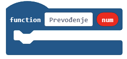
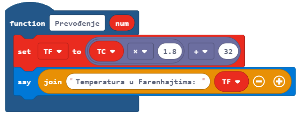
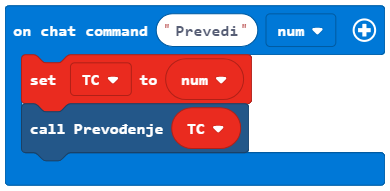
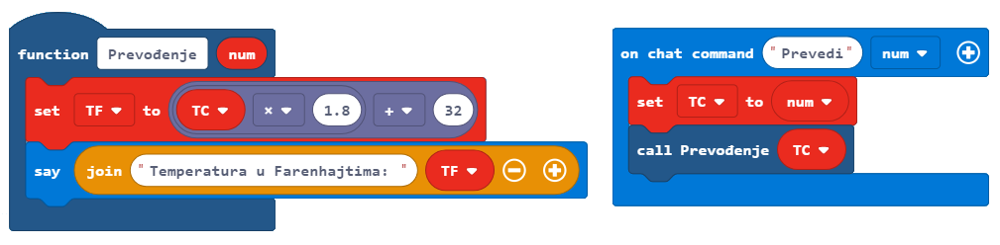

Project Task - Fahrenheit¶
In programming, reusing parts of the program is very important, because it makes the program simpler and more readable. To avoid writing the same program and repeating the same or similar program multiple times, we use functions.
The loops will repeat a certain part of the code a specified number of times. Functions will run the code once, but their advantage is that their code can be used countless times wherever and whenever we need it in the program. One of the main roles of a function is to break down the program into parts, which have well-defined purposes. For example, to make a pizza, you need to make the dough, roll out the dough, add the toppings, add other ingredients, and eventually bake it. If you wanted to program pizza production in Minecraft, you could divide the entire process into parts by using functions - one function for each part of the pizza-making process, for example, making the dough, baking, etc.
We can arrange a series of blocks one after another, thus creating a function, which we can then call every time we need to perform a certain activity within the program.
We will use a simple example of converting temperature expressed in degrees Celsius to degrees Fahrenheit to demonstrate the use of functions.
Stage 1.
Thinking about the task: The user enters the value in degrees Celsius, and the program converts it to degrees Fahrenheit. We will use the formula °F = °C × 1.8 + 32.
Stage 2
Open Code Builder (by pressing the key C); an editor window will appear where you can stack blocks.
For converting the temperature from degrees Celsius to degrees Fahrenheit, we will use the blocks that we will put in a function.
You can create a function by opening the subcategory Function (1) from the category  , and clicking on the button Make a Function (2), then in the input field enter the name of the function you want to create (3), in our case Conversion, clicking on the button Number (4) we can add a parameter, which will be a number, or more precisely the value of the temperature in degrees Celsius the user wishes to convert. When you click the button Done (5), the function will be created (6):
, and clicking on the button Make a Function (2), then in the input field enter the name of the function you want to create (3), in our case Conversion, clicking on the button Number (4) we can add a parameter, which will be a number, or more precisely the value of the temperature in degrees Celsius the user wishes to convert. When you click the button Done (5), the function will be created (6):
We need to create two variables TC and TF, which will store the values of temperatures in Celsius (the one entered by the user using the keyboard in the block  ) and in Fahrenheit (the one calculated by the formula).
) and in Fahrenheit (the one calculated by the formula).
Into the block  we will drag the following blocks:
the block , which we use to define the value of the variable
TF, by using the formula°F = °C × 1.8 + 32, which we will make by using the blocks from the category ,
,the block , which will display the temperature in degrees Fahrenheit.
We now have the function Conversion:
In order to convert the temperature from Celsius to Fahrenheit, we need to call the function presented above into the block .
Into the previously mentioned block, we need to drag the following blocks:
the block that defines the value of the variable
TCas the value entered by the user in the chat,the block that calls the function from the category .
The look of the code:
The look of the program, which converts the temperature in degrees Celsius to Fahrenheit:
Stage 3
Testing the program.
Click on the button  .
.
We open the chat by pressing the key T on the keyboard and entering the word Convert and after it the desired value. This will be our “trigger” starting the program, which will perform the conversion.